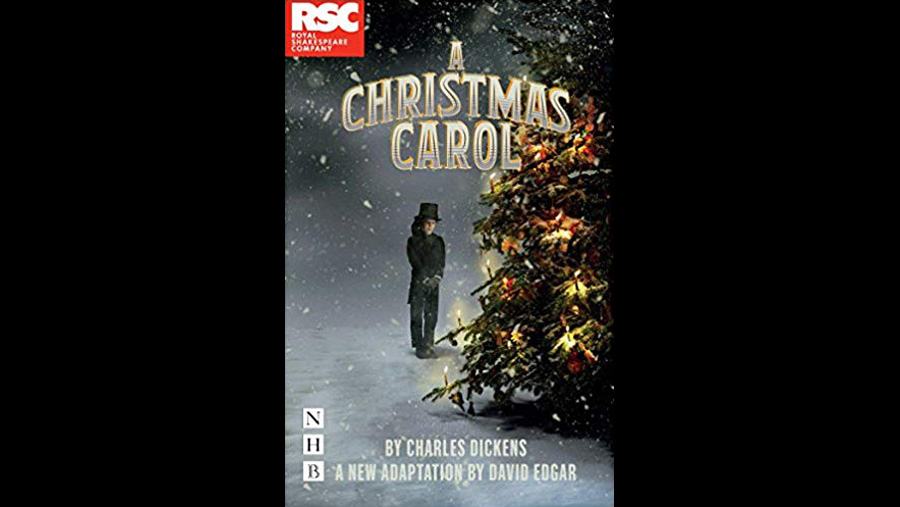

| Character | Actor |
|---|---|
| Ebenezer Scrooge | Phil Davis |
| Bob Cratchit | Gerard Carey |
Other roles played by: Nicholas Bishop
Tom Byrne
Gerard Carey
Sally Cheng
James Gant
Dinitia Gohil
John Hodgkinson
Beruce Khan
Verity Kirk
Luke Latchman
Bethany Linsdell
Emma Pallant
Vivien Parry
Joseph Prowen
Giles Taylor
Sarah Twomey
Jamie Tyler
Brigid Zengeni
| Role | Person |
|---|---|
| Director | Rachel Kavanaugh |
| Adaptor | David Edgar |